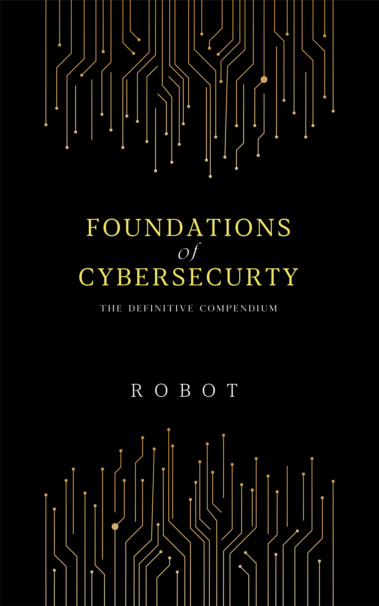

Foundations
of
Cybersecurity

About the Book
"Foundations of Cybersecurity" is a comprehensive guide currently in development, designed to take readers from cybersecurity novices to knowledgeable practitioners. This book will cover a wide range of topics, from basic concepts to advanced techniques, making it an invaluable resource for both beginners and seasoned professionals in the field.
Written by the expert Robot, this book aims to combine theoretical knowledge with practical insights, ensuring readers gain a deep understanding of the cybersecurity landscape. While the book is still being written, this website serves as a preview of its contents, allowing you to explore the topics that will be covered while still being worked on.
While this isn't everything inside the book, it'll hopefully help guide you on what's to come and where you can start improving your own knowledge.
Finally, note that at the time of this writing there are 286 listed 'sections' below, and the book is less than 1,000 pages. I have compressed as much data as possible to streamline your learning.
Book Contents
-
// First Section
- Dedication // Second Section
- Foreword // Third Section
- Introduction
- Why cybersecurity is important
- Overview on zero trust/trust but verify
- What is hacking
// Fourth Section
- Awareness for Employees & Business Owners
- Scam Messages and Phishing Attacks
- How to identify phishing emails
- Understanding spear-phishing
- Preventing business email compromise (BEC)
- What the backend might look like for a phishing panel
- Spear, Whaling, Smishing, Vishing
- AI use case in phishing (Automation, English, Voice cloning)
- Open Redirects in Phishing
- How phishing can be targeted due to your interests
- Browser Autofill & Hidden fields (Might require subsection)
- Ad buying/Link promotion virus/infections
- Importance of 2FA/Multi-Factor Authentication
- Benefits of 2FA
- Things you have, Things you are, Things you know
- Common 2FA & MFA Methods
- SMS-based verification
- Authenticator apps (Google Authenticator, Authy)
- Hardware tokens (YubiKey)
- Biometric methods (fingerprint, facial recognition)
- Securing Backup Codes
- Risks of Not Using 2FA
- Phishing and 2FA & Cookies/VPN's
- Implementation Tips
- Emerging Technologies in Authentication
- Software and Operating System Updates
- Why updates are critical
- Risks of using outdated software
- Enabling automatic updates
- End of life support
- Update servers
- Device Resetting and Disposal
- Overview on formatting
- Introduction to bytes and data storage
- Secure data wiping methods
- Old devices/Stolen devices & Storage Units
- Data recovery and corrupted data
- Risks of improper disposal
- Using certified recycling services
- Watering Hole Attacks Explained
- Definition and examples
- OSINT and privacy
- How attackers target websites
- Prevention techniques
- Password Managers
- Risk & Trust
- WiFi Security and Vulnerabilities
- Securing home and office WiFi
- Handshakes, WPS, Reaver, MiTM
- Evil Twin Attacks
- Wardriving
- Deauthentication & Jamming
- Understanding WPA3 encryption
- Risks of public WiFi networks
- Physical Security Measures (RFID, NFC, Vehicle Security)
- NFC cloning
- Replay attacks, Enumeration attacks & Sniffing
- Protecting RFID-enabled cards
- Securing NFC devices
- Vehicle hacking (Key FOB attacks) and prevention
- Red Team Engagements
- What is red teaming?
- TTPs, APTs & "Hacking groups"
- Lock Picking, Tamper Detection
- Corporate Offices, Gated Communities, Automative Security
- Simulating real-world attacks
- Benefits for organizational security
- Cameras and Privacy
- Laws and regulations/NDAs and when to use them
- GDPR, CCPA, HIPAA, PCI DSS
- Spy Cameras & Listening Devices
- How to detect hidden devices
- Smoke detectors, Clocks, Screws, Lightbulbs, Clothing buttons, USB chargers - Etc
- Using RF detectors & Physical Inspection, Lens Detection
- Shielded areas, Regular Sweeps, Policy and Training
- Listening devices (bugs), Smart TV's, Speakers, Airpods/Wireless headphones
- Audio Sweeping, Non-Linear Junction Detection, Thermal Imaging, IR/RF (Time based data sending over RF) SRT-107/SRN-58
- Sound Masking, Secure Communication
- Planted devices (Rubber Duckies, O.MG Cable, Screen Crab, Raspberry Pi & Exposed USB)
- Legal implications
- Credential Reuse and Database Breaches
- Risks of reusing passwords
- Combo Lists
- Single point of failure, Automated attacks (SentryMBA/OpenBullet etc)
- Proxy lists (early explanation)
- How breaches occur
- The impact of Database Breaches(IP, User/Pass, Email, Home Address, Phone, Card details, First and Last name, Recovery Questions)
- OSINT & further recon/blackmail and other attacks based on breaches
- Database lookup sites, downloading and legal ownership
- Using password managers
- OSINT and Doxing
- What is OSINT?
- Hacking, Blackmail, Harassment, Identity Theft Campaigns
- How attackers gather information
- Protecting personal data online
- Mitigation strategies always rely/depend on seeing how the info is obtained
- Reversing your hacker & Opsec
- Honeypots
- Linguistic patterns in cybercrime
- Understanding SIM Swapping, SWATTING, and Emergency Data Requests
- How SIM swapping occurs
- The Rise of EDR's
- Wealth and OG usernames
- Crying babies, urgency
- Preventing SWATTING incidents
- Recognizing fake data requests
- Employee VPN Access Best Practices
- Choosing a secure VPN
- Using company controlled VPN's, Proxies and tunnels
- Setting up split tunneling
- Setting up keys/refreshing keys
- Leaked OVPN files (dorking/exposed webservers)
- Monitoring VPN usage
- Bluetooth Hijacking Risks
- How attackers exploit Bluetooth
- CVE-2023-45866 and others
- Controlling/Broadcasting attacks via Bluetooth protocol
- Preventing unauthorized access
- Securing Bluetooth-enabled devices
- Face Detection and Location from Images
- How face detection works (pimeyes/facecheck/dating apps)
- North Korea finding insiders as well as job hiring (leveraging income)
- Company retreats, badge cloning/creation
- Metadata risks in photos
- Preventing location leaks
- Ransomware and RATs
- How ransomware spreads
- Leaked methods/chatlogs ransomware.live examples
- nomoreransom.org
- Stats on ransomware/targets
- NCSC, Europol and pipelines
- Insider threats
- FUD, Crypters, Persistence, Anti-VM, Signatures, Hashes
- Recognizing RAT infections
- Protecting critical data
- How Can I Trace My Own Digital Fingerprint?
- Tools for self-auditing, dorking, osint.industries, hibp, database services, mx records, catchall emails
- Removing personal data from sites
- Maintaining anonymity online
- Can someone hack me from just my IP Address?
- EDR, Database breaches, Phising based on torrent history, abuseipdb, social engineering
- Router exploits, firmware patches, open ports
- IP Cameras, Services, Shodan/Fofa/Censys, Exif
// Fifth Section
- Scam Messages and Phishing Attacks
- Protecting Yourself First
- Understand some of the following topics:
- Find the most common misconceptions when it comes to X
- Find an uncommon fact about X
- How might a hacker use X
- How might a defender use X
- What is an example use case of X being used in a positive way
- How many different types of X are there?
- Defanging a URL
- How to safely view and share URLs
- Embedds and why we defang
- Tools and techniques for defanging
- IP Loggers
- Recognizing and avoiding IP loggers
- All websites are IP loggers
- Other things IP loggers can detect
- WebRTC, Peer-to-peer, Javascript
- Risks of exposing your IP
- Legitimate uses
- Online Information Exposure
- Understanding your digital footprint
- Steps to minimize exposure
- Social media examples of vacation posts, house sitting requests etc
- EXIF Data in Images/Files & Images in PDFs
- What is EXIF data?
- PDF/Word file image extraction and analysis
- Types of information that can be leveraged
- Removing EXIF data for privacy
- Using screenshot of photos or snipping tool for example to remove exif easily
- Pokemon GO 2016 and EXIF/GPS
- Advertiser IDs and location tracking (Databrokers & Case studies)
- Facial Recognition Programs/Websites
- Privacy concerns with facial recognition
- Facecheck, Cheater checking, Pimeyes
- Using lookalikes as alternates to yourself
- Live deepface
- How to avoid exposure
- Browser Fingerprinting
- What is browser fingerprinting?
- Fonts, IP address, Browser versions, OS, Screen size, battery life, orientation, monitors, potential other sites you are logged into, upload/download speeds, other devices on your home network, zoom size, graphics card
- Techniques to reduce fingerprinting m
- Summary on how VPNs don't protect you against fingerprinting alone
- Cookie Tracking
- How cookies track your activity
- Local storage, Preferences, login status, cart balance etc
- EU GDPR implications and consumer privacy/protection
- Managing and blocking cookies
- Device Access Through Applications
- Permissions management
- When you access a website it might ask for location, camera etc ensure you don't allow these unless wanted
- Online camera for example might actually be recording not just taking a picture
- Preventing unauthorized access
- Keyboard Eavesdropping
- Threats from keyloggers
- Using virtual keyboards and encryption
- Shoulder Surfing
- Camera positions when using your devices
- Screen Privacy Filters
- Infected Files/File Extensions
- Identifying and avoiding malicious files
- Email attatchment, double extension, zero width, invisible characters, extension width
- Common file extension tricks
- Sandboxing
- What is sandboxing?
- Just because a file isn't detected DOESN'T MAKE IT SAFE
- Any.run, Design purpose to avoid main AV's
- Sandbox escapes, network access and VPNs etc
- Using sandboxes to test files safely
- Malicious Software Updates
- Recognizing fake updates
- Supply chain attacks
- Mimic legit sites or find vulnerable endpoints for updates which broadcast to it's users (software)
- Javascript inject (fake browser update)
- Safe update practices
- Typosquatting
- What is typosquatting?
- When are you most at Risk
- Python (pip packages) external package managers
- Dnstwister, hyphens, dots, dashes.
- Chinese characters, unicode, etc and give explanations for each
- How to spot and avoid it
- Social Engineering
- Common tactics used in social engineering
- Urgency, tech support, Control over your devices, Partial information over a period of time
- How to defend against manipulation
- Phishing (Browser in Browser Attacks)
- Understanding browser-in-browser phishing
- How to verify legitimate login screens
- Targeting Friends & Family
- Risks to close associates
- Use of social engineering in this tactic (Example of obituary to get link clicked)
- How to educate and protect them
- RFID Cloning
- What is RFID cloning?
- Replay, Eavesdropping, Tag Spoofing, Relay, Skimming, Side-Channel, Tag Cloning, DoS, Frequency Jamming, Forward Prediction, Voltage Manipulation, Electromagnetic Interference
- Steps to secure RFID cards (Rolling codes, farrady wallets etc)
- Rubber Duckies
- What are USB Rubber Duckies?
- Use cases, plants and WiFi control
- How to mitigate risks from malicious USBs
- USB Killer
- Understanding the USB Killer threat
- Preventing physical USB attacks
- Physical Security (Locks, Lighting, Privacy Screens)
- Improving physical access control
- Cable locks, Privacy Screens, Security Cameras, Lighting, Physical Barriers, Security Guards, Least privilege access
- WiFi Camera Crashing
- Disclosing your security openly (photo's of offices or discussing brand sponsorships etc)
- If someone knows your security system due to stickers on buildings or photos, they can find flaws to utilize
- Enhancing workspace privacy
- WiFi Cloning and Man-in-the-Middle Attacks
- Recognizing cloned networks
- Verify SSID and connection info when using public WiFi
- Never install custom certificates or software when using internet you don't control
- Dauth attacks, WPS, MiTM, Cloning
- How to secure your WiFi connections (VPNs, monitoring other devices, antivirus, firewall, sharing/shared folders, check for system updates against knew attacks such as LAN based or lateral movement)
- Dumpster Diving
- Finding passwords, security system boxes, access cards, payment information (social engineering)
- Time Zones and User Activity Tracking
- How time zones can expose user behavior
- Steps to anonymize activity patterns
- Vulnerable Associates
- Risks from weak security practices in others
- How to collaborate securely
- Harassment Campaigns
- Identifying harassment tactics
- Resources and steps to counter harassment
- EGO Exposure
- How oversharing can lead to risks
- Managing public information exposure
- Sim Swapping
- What is SIM swapping?
- Preventing SIM-based account takeovers
- Rabbit Holes & False Traps
- Avoiding distractions and misinformation
- Staying focused on verified threats
- Voice Cloning (Vishing)
- Threats from voice cloning technology
- Detecting and countering vishing attempts
- IP History and Registration IP vs Most Recent
- Analyzing IP address patterns
- Using registration data for threat analysis
- Password Reuse and Storage
- Risks of password reuse
- Best practices for secure password management
- Out-of-Date Software Exposure
- Risks of running outdated software
- Steps to stay updated securely
- Peer-to-Peer Sniffing
- How peer-to-peer networks can be exploited
- Steps to secure P2P usage
- Common Techniques to Remove Malware from a Computer
- Steps to identify and remove malware
- Using tools and best practices
- File Encryption/Ransomware (NoMoreRansom/Pivoting)
- Understanding ransomware and encryption
- Tools and steps for decryption and recovery
- Devices on Your Network
- Identifying devices on the network
- Securing networked devices
- Browser Exploits
- How browser vulnerabilities are exploited
- Steps to secure browser use
- Data Exfiltration
- How data is stolen from systems
- Preventing and detecting exfiltration
- Open Source Packages
- Risks in using open-source software
- Steps to verify and secure packages
- Steam Exploits/Game ACE/RCE
- Gaming-related vulnerabilities
- Protecting against ACE and RCE attacks
- WiFi Hacking Protection PSA
- Common WiFi hacking techniques
- Tips to secure wireless networks
- Phishing examples and email analysis
- Headers, domains etc
// Sixth Section
- Common Cybersecurity Terms
- Techniques and Methods
- Dorking
- Phishing
- Social Engineering
- SQL Injection
- Man-in-the-Middle Attack (MITM)
- DDoS/DoS
- War Driving
- OSINT/OPSEC
- CSINT
- HUMINT
- SIGINT
- IMINT
- GEOINT
- MASINT
- CYBINT
- SOCMINT
- TECHINT
- ACINT
- DARKINT
- NATINT
- MEDINT
- DOCINT
- Types of Malware
- Exploit
- Payload
- Zero-Day
- Backdoor
- Botnet
- Rootkit
- Ransomware
- Trojan
- Spyware
- Adware
- Worm
- Keyloggers
- Fileless Malware
- Cryptojacking
- Wallet Drainers
- Bootkits
- Staged
- Stageless
- Listener/Bind/Reverse
- Attack Techniques
- Brute Force Attack
- Bot Herder
- Doxing
- Cracking
- RAT (Remote Access Trojan)
- Gh0st, Back Orifice, Sub7, DarkComet, Poison Ivy, Blackshades, nJrat, Redline, etc
- Droppers vs Payload etc
- Cybersecurity Concepts
- Firewall
- IDS/IPS
- Yara and rules
- SIEM Tools
- Honeypot
- User Roles and Personas
- Script Kiddie (Skid)
- White Hat
- Black Hat
- Grey Hat
- Hacktivism
- Networking and Tools
- Databases
- Router/Modem
- Github
- VM/Virtual Machine
- Cryptocurrency
- Shell
- Root
- Owned
- Jeff Bezos 2018 (Kaspersky)
- Miscellaneous Terms
- Pwn
- 1337 (Leet) Speak
- Malvertising
- Viruses
- Section on Example RATS (Back Orifice through Plugx etc)
- Understanding Firewalls, IDS and IPS
- MaaS, SaaS etc Backdoor Sales
- Techniques and Methods
- Key Concepts: Threats, Vulnerabilities and Risks
- Security Posture, Pimeyes, Facial Reconigition example, Expired business domains/emails (face to username to password)
// Seventh Section
- Understanding Firewalls, IDS & IPS
- What are Firewalls? (Bouncers at clubs etc examples)
- Section explaining that this brief Introduction to firewalls is just to get the basics before moving forward as there's a lot to them.
- Types of Firewalls
- Packet-Filtering Firewalls
- Stateful Firewalls
- Proxy Firewalls
- Next-Generation Firewalls (NGFW)
- Understanding Intrusion Detection Systems (IDS)
- Signature-Based IDS
- Anomaly-Based IDS
- Host-Based IDS (HIDS)
- Network-Based IDS (NIDS)
- Understanding Intrusion Prevention Systems (IPS)
- How IPS Works
- IDS vs. IPS
- IPS Deployment Models
- Configuring Firewalls, IDS, and IPS (Types of tools to use, not an indepth guide)
- Best Practices for Security Monitoring
- Computers and Understanding them
- What is a CPU?
- Introduction to CPU
- Thermal Paste
- Active and Passive Radiators
- LGA vs. BGA vs. PGA sockets (embedded systems etc)
- Understanding VGA in relation to CPUs
- Understanding the GPU (Graphics Processing Unit)
- Types of GPUs (Integrated vs. Dedicated)
- Advantages and disadvantages of Integrated and Dedicated (machine types etc)
- How GPUs process graphics
- Gaming vs. Professional GPUs
- External GPU's
- Notebook vs Gaming laptop and marketing words
- Automatic Graphics Switching (battery saving etc)
- What is RAM?
- Types of RAM (DDR, SDRAM, DRAM, DDR SDRAM, ECC RAM, SO-DIMM etc.)
- RAM vs Storage Memory
- RAM frequency and latency (Aswell as DDR3, DDR4, DDR5 etc)
- How RAM impacts performance
- Advantages and disadvantages of RAM types
- Running machines with the OS in memory instead of storage
- Mixing and matching ram stick sizes, brands, frequency and latency
- SO-DIMM to DDR4 (Laptop RAM adapters for Desktop)
- Overclocking/Underclocking advantages and disadvantages
- What is a PSU?
- PSU wattage/voltage and efficiency ratings
- Gold, Platinum, etc (Discuss DC/AC etc)
- Modular vs. Non-modular PSUs
- Connectors and Cables
- Importance of PSU in system stability
- Monitors, Laptops and their power bricks
- UPS (Universal Power Supply)
- Risks of using incorrect adapters/Polarity
- CMOS batteries
- What is Input and Output (I/O) & Heat Production/Airflow inside a computer
- Understanding I/O devices
- Heat generation in computing (What is a high workload and expected temperatures)
- Cooling solutions (air vs. liquid)
- Storage Types: SATA/IDE etc
- Differences between HDD and SSD
- IDE, SSD, SATA, NVMe
- What is NVMe?
- RAID setups and their uses
- Lifespan on disk drives and how to read labels
- Disk2VHD VM creation
- PCIE Lanes
- What are PCIE lanes?
- Uses of PCIE lanes for GPUs and other components
- Version differences (e.g., PCIE 3.0 vs. 4.0)
- GPU risers (mining rigs or custom setups)
- Extra Peripherals and their Functions
- Connecting USB/AUDIO case ports
- Keyboards and mice
- Monitors and resolutions
- Printers and scanners
- Headphones, DAC's, Microphones
- BIOS and UEFI
- POST and EFI (NVRAM)
- Fan SPEED and curve
- Dual Boot
- MHZ (RAM) voltage etc
- What is the bootup process (From button press to attempting to load OS)
- Cords, Cables and Connectors
- Cat, USB, Pin, RJ45, etc
- Ribbon Cables (laptops)
- 24 pin double sided USB connectors
- 2.0,3.0,3.1,4 connections
- USB-C Powered monitors and limitations
- Lightning Cables from Apple (8-pin digital signals)
- DB-9,DE-9 RS232
- HDMI, displayport, VGA
- 3.5mm jacks
- Docking Stations
- Raid Storage
- Binary and Computer Related Units
- Understanding binary numbers
- What is a unit?
- Data storage units (KB, MB, GB, etc.)
- Hexadecimal and its uses in computing
- Bits vs Bytes
- Comparing IOT/Laptops/Desktop
- Benchmarking
- Why benchmarking is important
- Popular benchmarking tools
- Interpreting benchmark results
- Stress testing
- CPU-Z, GPU-Z etc
- Overclocking
- Sourcing and Building a Computer
- Choosing components (pcpartpicker, youtube, benchmarks)
- Compatibility checks
- Step-by-step assembly
- Fixing computers (hardware) ifixit, teardown videos
- Bonus components
- WiFi cards
- Replacing CD trays with harddrives(laptops)
- Inside a portable HDD
- Ubtek 3D Xpoint DC P4800X
- Liquid Crystal Displays (LCD vs OLED (CCFL, LED-backlit) etc)
- Digitizers
- Driver Installation
- Why drivers are necessary
- Finding and installing the right drivers
- Keeping drivers up to date (devmgmt.msc)
- Manufacturer Installs
- Windows updates
- POST required drivers, BIOS
- Keyboard Shortcuts & ALT Codes
- Commonly used shortcuts
- Using ALT codes for special characters
- Emojis
- Customizing shortcuts
- Windows + R showcase (shell:RecycleBinFolder)
- F2 Renaming files
- Shift select, ctrl selection
- Customizing and Understanding your OS
- Changing system settings
- Personalizing appearance
- Using advanced OS features
- Windows Sandbox
- Virtual Desktops
- Snip and sketch
- Focus Assist
- Dynamic Lock
- Clipboard History
- Flow Launcher, Treesize, Everything, Windows God Mode
- Core Windows Structure
- Navigating Search
- Storage Devices
- Startup Processes (Taskmanager and msfconfig)
- Registry overview
- Win-rar, 7z, tar.gz and unzipping files
- Task manager
- Navigating without a keyboard OR mouse
- "URI's" (mailto:, calculator:) etc
- Note-Taking Tools and Software
- Popular note-taking applications
- Obsidian, Joplin, Cherry-Tree, Emeditor, Notepad++, Github and Markdown
- Integrating notes with cloud storage
- Organizing and sharing notes
// Ninth Section
- What is a CPU?
- The Windows Command Line and Tools
- Understanding your Terminal
- Basics of command-line navigation
- File and folder management
- Using built-in commands
- ipconfig, msconfig, systeminfo, nvidia-smi, netuser, sfc, chkdsk, whoami, cd, dir, md, rd, ping, tracert (explain hops for example), tasklist (How they are executed)
- Copy pasting, editing your terminal, highlighting, color 02/2A etc and help documentation for commands
- Launching applications with custom parameters
- Coding in Batch
- Introduction to batch files
- Utility, DOS evolution, Role/Purpose
- Common batch commands
- Debugging batch scripts
- Interpreted vs Compiled code
- Creating your First BAT File
- Basic structure of a BAT file
- Executing a BAT file
- CALL vs OOP
- Taking user input (set /p choice=)
- Adding loops and conditions
- Accessing the Internet via Batch
- Using curl in batch scripts
- Automating downloads
- Handling network errors
- Understanding your Terminal
- Understanding System Paths & Environment Variables and ordering
- Setting environment Variables for your batch code
- Coding in PowerShell
- PowerShell syntax basics
- cmdlets, verb-noun,.net
- Executing commands
- Using variables
- If/Else,While/Until,For loops, Math, Comparisons, Functions, Reading/Writing files
- piping / [System.Date.Time]::Now, semicolon, square brackets, colon, angle brackets
- Basic PowerShell Scripting
- Writing your first script
- Using loops and conditions
- Error handling
- Configuring execution policy
- PowerShell ISE
- Introduction to the ISE environment
- Creating and testing scripts
- Debugging in ISE
- Creating Menus in PowerShell
- Designing a simple menu
- Handling user input
- Adding submenus
- Creating your First PowerShell Script
- Setting up the script environment
- Executing the script
- Automating tasks with scripts
- Understanding Cmdlets
- What are cmdlets?
- Commonly used cmdlets
- Customizing cmdlets
- Aliases (IWR,IEX etc and their dangers)
- Internet Access using PowerShell
- Using Invoke-WebRequest
- Downloading files
- Interacting with APIs
- Debloating your Operating System // Eleventh Section
- Understanding Hashes
- Introduction to Hash Functions
- What are hash functions?
- Common hashing algorithms
- Applications of hashes
- File Integrity Verification
- Using hashes to verify files
- Tools for hash verification
- Checking digital signatures
- Basic Overview of Hash Cracking
- Understanding hash cracking
- Common tools for hash cracking
- Ethics and legal considerations
- Introduction to Hash Functions
- Introduction to Python
- What is Python & Why is it so useful
- Installing Python
- Python basics for cybersecurity
- Creating menu-driven scripts
- Argparse
- Internet access and data retrieval with Python
- Pypi, imports etc
// Thirteenth Section
- Visual Studio Code Introduction and IDE's
- Using Visual Sutdio Code with our previous code (Python, Batch, Powershell)
- Obfuscation and minified code // Fourteenth Section
- Getting Started in CyberSecurity
- Basic Encryption and Cryptography (Checksums, Get-fileHash and virustotal)
- What is a salt and what is pepper?
- Hashcat installation and setup + basic hashcracking
- Creating wordlists
- Rainbow Tables
- Mask attacks, Straight dictionaries, Rules
- Permutations and keyspace // Fifteenth Section
- Web development basics
- HTML fundamentals
- CSS for styling web pages
- JavaScript for interactive web elements
- Using Python to host a simple website
// Sixteenth Section
- Awesome hardware & Tools
- 0.mg Cables
- Rubber Duckies
- Pick Guns
- Bump Keys
- Flipper Zero
- Lishi Picks
- Air Wedge
- Mollie Jim
- Under Door Tool
- Pwnagotchi
- Raspberry Pi
- Bash Bunny
- WiFi Pineapple
- Shark Jack
- Plunder Bug Lan Tap
- Packet Squirrel
- Key Croc
- Screen Crab
- Lan Turtle
- NetHunter
- Proxmark3
- Replicant (Covert Instruments)
- Lan Tapping
- CH341A/CH347 Programmer
- Quick look at lockpicking // Seventeenth Section
- Virtual machines
- Understanding Virtualization & Enabling (SVM, UEFI, BIOS, appwiz.cpl, 32/64bit etc)
- Hypervisor types
- Checking it's enabled (Task manager)
- Setting up VirtualBox
- Working with VMware
- Introduction to Proxmox
- Using Microsoft Hyper-V
// Eighteenth Section
- Linux distros and names, Kali, Parrot, Arch, Ubuntu, Debian - what are they? // Nineteenth Section
- Using Linux for the first time
- Folder Structure
- Understanding your terminal
- Understanding Bash shells - Bash/Zsh
- Linux command line basics
- Linux file system structure
- Linux permissions and understanding them (File Permissions)
- File descriptors a brief overview
- Linux customization, Desktop environments
- "Find/which/apropos etc"
- Grep, Regex, AWK, sed
- Introduction to Kali Linux
- Shells (Bash, ZSH etc)
- Oh-my-zsh, Bash completion, History
- Stdout/Stdin
- VM-host interaction
- Accessing host machine from inside a VM
- Sharing folders between host and VM
// Twentieth Section
- Windows Subsystem for Linux
- WSL and its future in windows
- Win-Kex/Wsl-g
// Twenty-first Section
- Internet infrastructure
- Domain Name System (DNS)
- Secure Sockets Layer (SSL), HTTPS and TLS
- Subdomains and their significance
- Virtual hosts (Vhosts)
- HTTP method (GET/POST/PUT/DELETE/OPTION etc)
// Twenty-second Section
- Internet Service Providers (ISPs) and networking
- How ISPs work
- Understanding Autonomous System Numbers (ASNs)
- Calculating subnets, IP ranges and packets
- TCP/IP & UDP
- WAN/LAN/CAN
- Physical Internet Mediums (Fiber/DSL/Copper/RF/Satellite/Cellular)
- 2G, 3G, 4G, 5G etc
- Subnetting
- Public vs Private IPs (LAN VS WAN)
- /etc/hosts
- Underwater cables
- Binary
// Twenty-third Section
- Browser DevTools
- Inspecting network requests
- Converting browser requests to Python code (Curlconverter)
- Debugging with devtools console and cool things you can do
- Curl converter
- Cache and cookies
// Twenty-fourth Section
- Networking
- OSI model overview
- Sockets
- IPv4 and IPv6
- Network analysis
- Using Wireshark and Tshark
- Understanding TCP protocol
- UDP protocol explained
// Twenty-sixth Section
- Data formats
- Markup languages (XML, HTML, YAML)
- Markdown for documentation
- JSON for data interchange
- Python pickle for object serialization
- SQL databases and interacting with them
-
- Remote access tools (FTP, SSH, RDP, Telnet etc)
// Twenty-seventh Section
- Website OSINT (Open Source Intelligence)
- Passive OSINT techniques
- Interactive website OSINT methods
// Twenty-eigth Section
- Basic Cybersecurity Concepts
- Port Scanning
- Directory Scanning
- IDOR
// Twenty-ninth Section
- WiFi hacking
- WiFi hacking techniques
- Wireless network adapters for penetration testing
- Encryption, Asymmetric, Symmetric and handshakes // Thirtieth Section
- Attacking host machines
- Network mapping with Nmap
- Directory scanning techniques
- Traffic monitoring and analysis
// Thirty-first Section
- CVEs and MITRE
- Understanding Common Vulnerabilities and Exposures (CVEs)
- MITRE ATT&CK framework
- CIA triad in information security
- Security Models
- CIA Triad and how STRIDE, PASTA, DREAD threat models work
- Security Models: Define "how to secure"
- Threat Models: Identify "what could go wrong"
- Threat Actor Profiling
- ALE - SLO x ARO
// Thirty-second Section
- Pentesting Methodology
- Passive/Active reconnaissance
- Vulnerability Analysis
- Exploitation
- Post-Exploitation
- Reporting
- Advanced Cybersecurity Concepts & Putting it into Practice
- Resources and links
- Order of actions
- Dynamic on the fly feedback
- Dorking
- Google-Fu
- Example site walkthrough
- Order of least traffic logs
- Passive Website OSINT (Links and dorking)
- Interactive website OSINT
// Thirty-fourth Section
- List of tools used in the stories to come
- Nmap/Rustscan/Masscan (Syn, TCP, XMAS, Stealth, FIN, NULL etc)
- User agents (Blending)
- Wfuzz/Dirbuster/Gobuster/Feroxbuster/dirsearch
- Burpsuite/ZAP Proxy
- Metasploit/ExploitDB
- Wireshark/tcpdump
- Hydra/Medusa/Patator
- John the Ripper/hashcat
- Sqlmap/NoSQLMap
- Maltego/Recon-ng
- Arachni/Acunetix
- Aircrack-ng/Reaver/Wifite
- OWASP Amass/Sublist3r
- Shodan/Censys/ZoomEye
- OpenVAS/Nessus/QualysGuard
- Enum4linux/Smbclient
- msfvenom/Shellter
- Netcat/Socat Nc/Telnet/Rlwrap & shells etc
- Beef/XSSer
- Snort/Suricata
- TheHarvester/Assetfinder
- Binwalk/Foremost
- Radare2/Ghidra/IDA Pro
- Docker/Podman
- RustScan/Masscan
- etc...
- Hacking in action - Short Stories
- Directory traversal and path traversal
- Cross-Site Request Forgery (CSRF)
- Cross-Site Scripting (XSS)
- Reflected XSS
- Stored XSS
- DOM-based XSS
- Log Poisoning & Lfi/Ftp/Ssh/ Application specific
- Open Redirect
- DoS/DDoS and their techniques (SYN, POD, SYN Flood vs UDP etc)
- Server-Side Includes (SSI) injection
- Client-Side Template Injection (CSTI)
- Carriage Return Line Feed (CRLF) injection
- Subdomain takeovers
- Dangling markup attacks
- Prototype pollution
- Server-Side Request Forgery (SSRF)
- Server-Side Template Injection (SSTI)
- XSLT (eXtensible Stylesheet Language Transformations) attacks
- Cross-Site Script Inclusion (XSSI)
- Cross-Site Leaks (XS-Leaks/XS-search)
- NoSQL injection
- LDAP injection
- Regular Expression Denial of Service (ReDoS)
- XPath injection
- Expired link reference takeover
- Clickjacking attacks
- Content Security Policy (CSP) bypasses
- Cross-Origin Resource Sharing (CORS) misconfigurations
- Two-Factor Authentication (2FA)(OTP) bypasses
- Payment system bypasses
- CAPTCHA bypassing techniques
- Login bypasses
- Race condition exploits
- Rate limit bypassing
- API abuse techniques
- Password reset vulnerabilities and takeovers
- Account takeover via registration process
- Deserialization attacks
- Email header injection
- JSON Web Token (JWT) vulnerabilities
- XML External Entity (XXE) injection
- PDF injection attacks
- OAuth vulnerabilities leading to account takeover
- SAML vulnerabilities
- Unicode normalization attacks
- Buffer overflow exploits
- Shared hosting server pivoting
- HTML injection techniques
- DNS Poisoning
- Null-byte poisoning
- Hacking a webadmin through OSINT & Physical Entry
- Infected github code
- Deep packet inspection
- Airgrapped machines
- Cloud/AWS
- Param Fuzzing
- Living off the land
- WiFi Hacking Web Admins for Access
-
// Eigth Section
- Bell-LaPadula Model
- Biba Model
- Clark-Wilson Model
- Business Continuity Plans
- Data obfuscation and exfiltration
- FTP
- Ciphers (Rot, Morse, Substition, etc)
- Stegseek
- Zip/Rar/7z etc hashcracking
- Spectograms
- Wav/Steg/Mp3/Base64/XOR/Morse/Rot etc, etc
- QR Codes/Zbar etc
- Snyk
- Semgrep
- Commits and contributions
- Dumping APKs
- Advanced static and dynamic analysis
- Segfaults and BoF
- Ghidra, Detect-it-Easy, IDA, Binary Ninja (disassemblers)
- Cheat Engine
- "Malware mutation techniques"
- LD_Preload
- Routers, Chips and Firmware dumping
- Mod Chips
- Stories and techniques not often seen but are good showcases
- Command cheatsheet
- Workflow checklist
- Data mining your own machines
- Law enforcement techniques: Dogs, Splicing power supplies, Cold boot attacks, Ram dumping, Electromagnetic Emanations of Keyboards
- Hacker Movies and shows
- Things you have, Things you know, Things you are
- Debunking common myths
- Understanding real threats vs. fear-mongering
- Zero-click exploits
- Browser drive-by attacks
- Exploit kits and browser kits
- Botnets and their operations
- Ransomware threats
- Crypters and their role in malware
Notes For The Book Checklist
Stay Tuned
This book is currently in development. Check back regularly for updates on the writing progress and release information. In the meantime, feel free to explore the topics listed above to guide your cybersecurity learning journey.